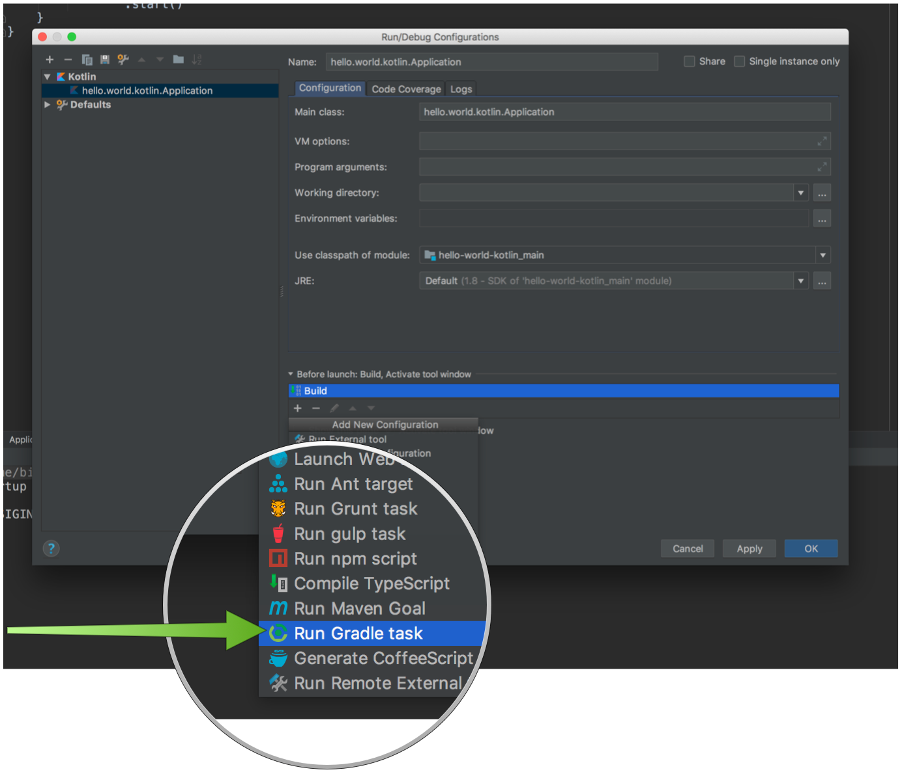

compile 'javax.annotation:javax.annotation-api:1.3.2'12 Language Support
Version: 1.0.0.BUILD-SNAPSHOT
12 Language Support
Micronaut supports any JVM language that implements the Java Annotation Processor API.
Although Groovy, does not in fact support this API, special support has been built via an AST transformation. The current list of supported languages is: Java, Groovy and Kotlin (via the kapt tool).
| Theoretically any language that supports a way to analyze the AST at compile time could be supported. The io.micronaut.inject.writer package includes classes that are language neutral and are used to build BeanDefinition classes at compile time using the ASM tool. |
The following sections cover language specific features and considerations for using Micronaut.
12.1 Micronaut for Java
For Java, Micronaut uses a Java BeanDefinitionInjectProcessor annotation processor to process classes at compile time and produce BeanDefinition classes.
The major advantage here is that you pay a slight cost at compile time, but at runtime Micronaut is largely reflection-free, fast and consumes very little memory.
Using Micronaut with Java 9+
Micronaut is built with Java 8, however works fine with Java 9/10 and above as well. The classes that Micronaut generates sit along side existing classes within the same package, hence do not violate anything regarding the Java module system.
There are some considerations to take into account when using Java 9/10 with Micronaut.
The javax.annotation package
The javax.annotation, which includes @PostConstruct, @PreDestroy etc. is no longer part of the core JDK but instead a module. If you run under Java 9+ you will need to import the module or add the dependency to your classpath:
Adding the
javax.annotation dependencyUsing Project Lombok
Project Lombok is a popular java library that adds a number of useful AST transformations to the Java language via annotation processors.
Since both Micronaut and Lombok use annotation processors, special care needs to be taken when configuring Lombok to ensure that the Lombok processor runs before Micronaut’s processor.
For example in Gradle adding the following dependencies to the dependencies block:
Configuring Lombok in Gradle
compileOnly 'org.projectlombok:lombok:1.16.20'
annotationProcessor "org.projectlombok:lombok:1.16.20"
...
// Micronaut processor define after Lombok
annotationProcessor "io.micronaut:inject-java"Or when using Maven:
Configuring Lombok in Maven
<annotationProcessorPaths>
<path>
<groupId>org.projectlombok</groupId>
<artifactId>lombok</artifactId>
<version>1.18.0</version>
</path>
<path>
<groupId>io.micronaut</groupId>
<artifactId>inject-java</artifactId>
<version>${micronaut.version}</version>
</path>
</annotationProcessorPaths>| In both cases (Gradle and Maven) the Micronaut processor should be configured after the Lombok processor, reversing the order of the declared dependencies will not work. |
IDE Considerations
You can use any IDE to develop Micronaut, if you depend on your configured build tool (Gradle or Maven) to build the application.
However, if you wish to run tests within the IDE that is currently only possible with IntelliJ IDEA.
For IntelliJ IDEA if you plan to use the IntelliJ compiler then you should enable annotation processing under the "Build, Execution, Deployment → Compiler → Annotation Processors" by ticking the "Enable annotation processing" checkbox:

As of this writing, Eclipse has incomplete support for Java annotation processors, hence you will have to delegate to BuildShip or M2Eclipse for building and running tests.
Retaining Parameter Names
By default with Java, the parameter name data for method parameters is not retained at compile time. This can be a problem for Micronaut if you do not define parameter names explicitly and depend on an external JAR that is already compiled.
Consider this interface:
Client Interface
interface HelloOperations {
@Get("/hello/{name}")
String hello(String name);
}At compile time the parameter name name is lost and becomes simply arg0 when compiled against or read via reflection later. To avoid this problem you have two options. You can either declare the parameter name explicitly:
Client Interface
interface HelloOperations {
@Get("/hello/{name}")
String hello(@QueryValue("name") String name);
}Or alternatively it is recommended that you compile all byte code with -parameters flag to javac. See Obtaining Names of Method Parameters. For example in build.gradle:
build.gradle
compileJava.options.compilerArgs += '-parameters'12.2 Micronaut for Groovy
The Groovy language has first class support in Micronaut.
Groovy Specific Modules
Additional modules exist specific to Groovy that improve the overall experience. These are detailed in the table below:
| Dependency | Description |
|---|---|
|
Includes AST transformations to generate bean definitions. Should be |
|
Adds the ability to specify configuration placed in |
|
Includes AST transforms that make it easier to write Functions for AWS Lambda |
The most common module you will need is inject-groovy, which enables DI and AOP for classes written in Groovy.
Groovy Support in the CLI
The Command Line Interface for Micronaut includes special support for Groovy. To create a Groovy application use the groovy lang option. For example:
Create a Micronaut Groovy application
$ mn create-app hello-world -lang groovyThe above will generate a Groovy project, built with Gradle. You can use the -build maven flag to generate a project built with Maven instead.
Once you have created an application with the groovy feature commands like create-controller, create-client etc. will generate Groovy files instead of Java. The following example demonstrates this action when using interactive mode of the CLI:
Create a bean
$ mn
| Starting interactive mode...
| Enter a command name to run. Use TAB for completion:
mn>
create-bean create-client create-controller
create-job help
mn> create-bean helloBean
| Rendered template Bean.groovy to destination src/main/groovy/hello/world/HelloBean.groovyThe above example demonstrates creating a Groovy bean that looks like the following:
Micronaut Bean
package hello.world
import javax.inject.Singleton
@Singleton
class HelloBean {
}
Groovy automatically imports groovy.lang.Singleton which can be confusing as it conflicts with javax.inject.Singleton. Make sure you include the javax.inject.Singleton import when declaring a singleton bean!
|
We can also create a client - don’t forget Micronaut can act as a client or a server!
Create a client
mn> create-client helloClient
| Rendered template Client.groovy to destination src/main/groovy/hello/world/HelloClient.groovyMicronaut Client
package hello.world
import io.micronaut.http.client.Client
import io.micronaut.http.annotation.Get
import io.micronaut.http.HttpStatus
@Client("hello")
interface HelloClient {
@Get("/")
HttpStatus index()
}Now let’s create a controller:
Create a controller
mn> create-controller helloController
| Rendered template Controller.groovy to destination src/main/groovy/hello/world/HelloController.groovy
| Rendered template ControllerSpec.groovy to destination src/test/groovy/hello/world/HelloControllerSpec.groovy
mn>Micronaut Controller
package hello.world
import io.micronaut.http.annotation.Controller
import io.micronaut.http.annotation.Get
import io.micronaut.http.HttpStatus
@Controller("/hello")
class HelloController {
@Get("/")
HttpStatus index() {
return HttpStatus.OK
}
}As you can see from the output from the CLI a Spock test was also generated for you demonstrating how to test the controller:
HelloControllerSpec.groovy
...
void "test index"() {
given:
HttpResponse response = client.toBlocking().exchange("/hello")
expect:
response.status == HttpStatus.OK
}
...Notice how you use Micronaut both as client and as a server to test itself.
Programmatic Routes with GroovyRouterBuilder
If you prefer to build your routes programmatically (similar to Grails UrlMappings) then a special io.micronaut.web.router.GroovyRouteBuilder exists that has some enhancements to make the DSL better.
The following example shows GroovyRouteBuilder in act:
Using GroovyRouteBuilder
@Singleton
static class MyRoutes extends GroovyRouteBuilder {
MyRoutes(ApplicationContext beanContext) {
super(beanContext)
}
@Inject
void bookResources(BookController bookController, AuthorController authorController) {
GET(bookController) {
POST("/hello{/message}", bookController.&hello) (1)
}
GET(bookController, ID) { (2)
GET(authorController)
}
}
}| 1 | You can use injected controllers to create routes by convention and Groovy method references to create routes to methods |
| 2 | The ID property can be used to reference include an {id} URI variable |
The above example results in the following routes:
-
/book- Maps toBookController.index() -
/book/hello/{message}- Maps toBookController.hello(String) -
/book/{id}- Maps toBookController.show(String id) -
/book/{id}/author- Maps toAuthorController.index
Using GORM in a Groovy application
GORM is a data access toolkit originally created as part of Grails framework. It supports multiple database types. The following table summarizes the modules needed to use GORM and links to documentation.
| Dependency | Description |
|---|---|
|
Configures GORM for Hibernate for Groovy applications. See the Hibernate Support docs |
|
Configures GORM for MongoDB for Groovy applications. See the Mongo Support docs. |
|
Configures GORM for Neo4j for Groovy applications. See the Neo4j Support docs. |
Once you have configured a GORM implementation per the instructions linked in the table above you can use all features of GORM.
GORM Data Services can also participate in dependency injection and life cycle methods:
GORM Data Service VehicleService.groovy
@Service(Vehicle)
abstract class VehicleService {
@PostConstruct
void init() {
// do something on initialization
}
abstract Vehicle findVehicle(@NotBlank String name)
abstract Vehicle saveVehicle(@NotBlank String name)
}You can also define the service as an interface instead of an abstract class if you want GORM to do all of the work and you don’t want to add your own behaviors.
Serverless Functions with Groovy
A microservice application is just one way to use Micronaut. You can also use it for serverless functions like on AWS Lambda.
With the function-groovy module, Micronaut features enhanced support for functions written in Groovy.
See the section on Serverless Functions for more information.
12.3 Micronaut for Kotlin
The Command Line Interface for Micronaut includes special support for Kotlin. To create a Kotlin application use the kotlin lang option. For example:
|
Create a Micronaut Kotlin application
$ mn create-app hello-world -lang kotlinSupport for Kotlin in Micronaut is built upon the Kapt compiler plugin, which includes support for Java annotation processors. To use Kotlin in your Micronaut application, you will simply need to add the proper dependencies to configure and run kapt on your kt source files. Kapt will create Java "stub" classes for each of your Kotlin classes, which can then be processed by Micronaut’s Java annotation processor. The stubs are not included in the final compiled application.
| Learn more about kapt and its features from the official documentation. |
The Micronaut annotation processors are declared in the kapt scope when using Gradle. For example:
Example build.gradle
dependencies {
compile "org.jetbrains.kotlin:kotlin-stdlib-jdk8:$kotlinVersion" (1)
compile "org.jetbrains.kotlin:kotlin-reflect:$kotlinVersion"
kapt "io.micronaut:inject-java" (2)
kaptTest "io.micronaut:inject-java" (3)
...
}| 1 | Add the Kotlin standard libraries |
| 2 | Add the inject-java dependency under the kapt scope, so classes in src/main are processed |
| 3 | Add the inject-java dependency under the kaptTest scope, so classes in src/test are processed. |
With a build.gradle file similar to the above, you can now run your Micronaut application using the run task (provided by the Application plugin):
$ ./gradlew runAn example controller written in Kotlin can be seen below:
src/main/kotlin/example/HelloController.kt
package example
import io.micronaut.http.annotation.*
@Controller("/")
class HelloController {
@Get("/hello/{name}")
fun hello(name: String): String {
return "Hello $name"
}
}Kotlin, Kapt and IntelliJ
As of this writing IntelliJ’s built-in compiler does not directly support Kapt and annotation processing. You must instead configure Intellij to run Gradle (or Maven) compilation as a build step before running your tests or application class.
First edit the run configuration for tests or for the application and select "Run Gradle task" as a build step:

Then add the classes task as task to execute for the application or for tests the testClasses task:

Now whenever you run tests or the application Micronaut classes will be generated at compilation time.
Kotlin and Retaining Parameter Names
Like with Java, the parameter name data for method parameters is not retained at compile time when using Kotlin. This can be a problem for Micronaut if you do not define parameter names explicitly and depend on an external JAR that is already compiled.
To enable the retention of parameter name data with Kotlin you should set the javaParameters option to true in your build.gradle:
build.gradle
compileTestKotlin {
kotlinOptions {
jvmTarget = '1.8'
javaParameters = true
}
}